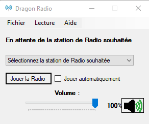

Dragon Radio
[Important!] en raison d'un problèmes critique si vous avez encore la version 1.1.1 veuillez la supprimer et télécharger la dernière version
Bonjour voici mon application pour écouter les Radio du Québec
Démonstration vidéo :
Liste des radios disponible :
- ÉNERGIE Montreal 94.3
- Rouge FM Montréal 107.3
- CKOI Montréal 96.9
- 98,5FM Montréal
- Rythme FM 105.7 Montréal
- 95 Virgin Radio FM Montréal
- 106.5 BoomFM St-Hyacinthe
- The Beat 92.5FM
- CHOM 97.7 Montréal
- M103.5FM Lanaudière
- CJSO 101.7 FM Sorel-Tracy
- QUB Radio
- ICI Radio-Canada Première
- ICI Radio-Canada Musique
- Radio-classique Montréal
- Radio Acton 103.7 St-Hyacinthe
Systèmes d'exploitation :
- Windows 8/10/11
Logiciel requis :
- NET Framework 4.7.2
Version actuelle :
- 1.1.7